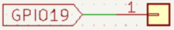

Objetivo. Medir continuamente la distancia usando el sensor ultrasónico HC-SR04. Mostrar la distancia en una pantalla LCD1602. Activar un zumbador a una frecuencia determinada si la distancia es menor a 5 cm, repitiendo cada 5 segundos hasta que el objeto se aleje.
Procedimiento.
-
Conectar el sensor HC-SR04 al ESP32:
- Trigger a GPIO16
- Echo a GPIO4

-
Conectar el módulo LCD1602 (I2C) al ESP32:
- SCL a GPIO22
- SDA a GPIO21

-
Conectar el zumbador al pin GPIO23.

- Configurar la pantalla LCD usando la librería lcd1602.
- Implementar las funciones para medición de distancia y activación del zumbador.
-
Ejecutar un bucle que actualice la pantalla y active la alarma según la distancia.
from machine import Pin, I2C, PWM from time import sleep, ticks_us, ticks_diff from lcd1602 import LCD # Crea una instancia de la clase LCD y le asigna la variable lcd lcd = LCD() print("Alarma más completa") # Configuración del I2C para la pantalla LCD I2C_SCL = 22 I2C_SDA = 21 # Configuración del sensor ultrasónico TRIG_PIN = 16 ECHO_PIN = 4 trig = Pin(TRIG_PIN, Pin.OUT) echo = Pin(ECHO_PIN, Pin.IN) # Configuración del zumbador ZUMBADOR_PIN = 23 zumbador = PWM(Pin(ZUMBADOR_PIN)) # Función para medir la distancia def medir_distancia(): trig.off() sleep(0.002) trig.on() sleep(0.00001) trig.off() while echo.value() == 0: inicio = ticks_us() while echo.value() == 1: fin = ticks_us() duracion = ticks_diff(fin, inicio) distancia = (duracion * 0.0343) / 2 # Convertir a cm return distancia # Función para activar el buzzer def activar_zumbador(): zumbador.freq(2000) # Frecuencia en Hz zumbador.duty(512) # Intensidad del sonido sleep(0.5) zumbador.duty(0) # Apagar buzzer # Bucle principal lcd.message("Distancia: --- cm") while True: distancia = medir_distancia() lcd.clear() lcd.message("Distancia: {:.1f}cm".format(distancia)) if distancia < 5: activar_zumbador() sleep(5) # Esperar 5 segundos antes de volver a verificar else: sleep(1) # Verificar cada segundo si la distancia es segura
Actividades sugeridas.
- Cambiar el umbral de distancia de 5 cm a otro valor.
- Mostrar un mensaje de advertencia adicional en la pantalla LCD cuando se active la alarma.
- Ajustar la frecuencia y duración del zumbador para generar diferentes tonos de alerta.
- Probar con diferentes materiales y formas de objetos para observar variaciones en la detección.
- Guardar el programa en el microcontrolador y ejecutarlo sin conexión al PC.